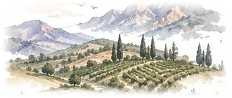

How it is usually done
- Letter foldPanels nest; the inner one is a little shorter. Printivity
- Z-foldEqual panels, folded in a zigzag, open like a fan. 4over4
- Gatefold on its sideTop and bottom meet in the middle, open up and down. PaperSpecs
- Vertical pocketfoldA pocket holds the cards; closed with a seal, twine or band. Paperlust
- On screenPanels hinge on rotateX with perspective; keep 3 to 6 panels; fade under reduced motion. Codrops · PFold
Three concepts


2Top lifts, then bottom drops
From the letter fold (Printivity)
Maya e Tomás
10 de julho

